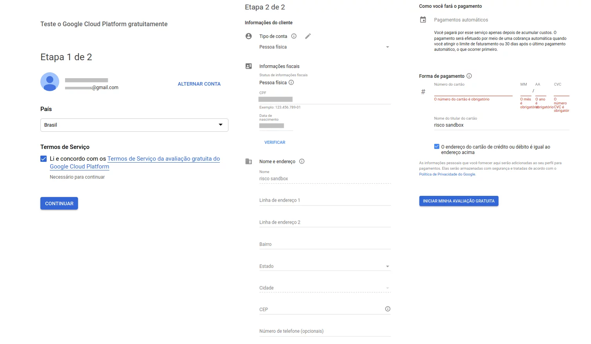
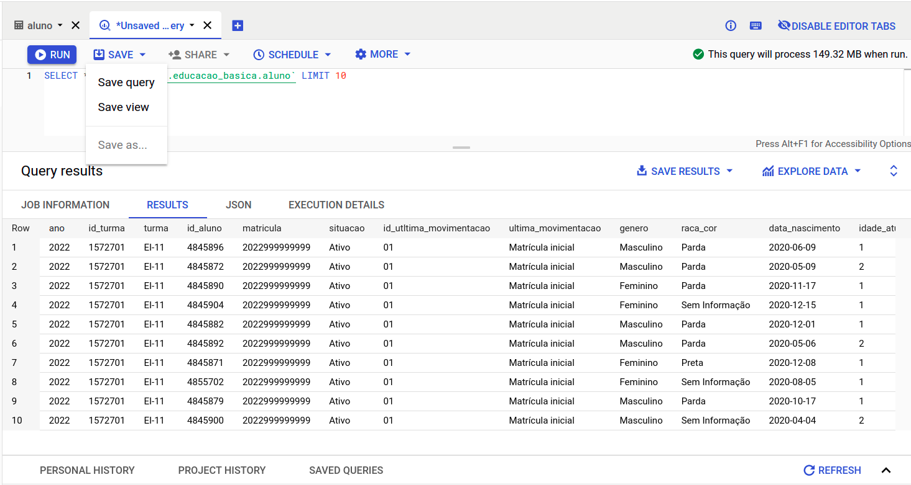

Como acessar dados no data lake
Olá! Quer acessar dados do data lake? Beleza! Esse guia tem como objetivo cobrir diversos cenários de acesso a eles. Mas, para isso, deixo aqui algumas perguntas e redirecionamentos que podem te ajudar:
- Ainda não sabe qual dado quer acessar?
→ Sem problemas! Vamos para a se√ß√£o Como buscar dados.
- Já escolheu o dado no data.rio e quer acessá-lo via download?
→ Excelente! Basta clicar no link, ele fará o download do arquivo. Se ele não estiver dispon√≠vel, entre em contato conosco, será um prazer te ajudar.
- Já escolheu o dado no data.rio e quer acessá-lo via BigQuery/Python/R/PowerBI?
→ Sensacional! Caso ainda não tenha uma conta na GCP e um projeto configurado, siga para a se√ß√£o Como criar uma conta na GCP. Se já tiver, melhor ainda! Basta olhar aqui ao lado, no menu de navega√ß√£o, a se√ß√£o que melhor se encaixa com suas necessidades.
- Seu caso não se encaixa em nenhum acima?
→ Poxa! Vamos trabalhar juntos para melhorar o acesso aos dados! Entre em contato conosco, vamos entender sua demanda e te ajudar! ü§ó
Como buscar dados
Conhecendo o data.rio
Voc√™ ainda não conhece o data.rio? ü§Ø
O data.rio √© o portal de dados abertos da Prefeitura do Rio de Janeiro. Ele √© estruturado e mantido pelo Instituto Pereira Passos. N√≥s, como Escrit√≥rio de Dados, em parceria, disponibilizamos os dados do data lake lá tamb√©m! ü§©
Tome um tempo para navegar pelo site e conhecer os dados disponíveis!
Identificando dados do data lake
Na página de pesquisa do data.rio, você poderá buscar por dados das mais diversas formas. Ao acessá-la, você deve encontrar algo assim:

Rolando a página, ao lado esquerdo, você verá um campo "Tags". Ali, você pode utilizar a tag escritorio_de_dados para
encontrar os dados do data lake!
Então você pode escolher o dado que quiser ali e, ao clicar, você vai se deparar com uma página semelhante à seguinte:

Ali tem tudo que voc√™ precisa saber sobre o dado e diversas maneiras de acessá-lo! üí•
Como criar uma conta na GCP
Requisitos
- Ter uma conta Google válida (um Gmail, por exemplo)
- Cartão de crédito (apesar de ser necessário, a GCP provê 1TB de consumo de dados gratuitamente todo mês, dentre outras coisas. Para mais informações, veja referências)
Criando uma conta
- Vá ao GCP Console e clique no botão "Comece a usar gratuitamente", na barra superior direita
-
Faça login com sua conta Google
-
Preencha as informações necessárias para cadastro, incluindo os dados do cartão de crédito

- Quando chegar na etapa de verificação de informações de pagamento, clique em "Prosseguir para a verificação"
- A aprovação dos documentos pode levar até 2 dias úteis.
Criando um projeto
Para consumir dados via Google BigQuery, será necessário criar um projeto na GCP. Para fazê-lo, siga as seguintes etapas:
- Vá ao GCP Console e clique no botão "Selecione um projeto"

- Clique na opção "Novo projeto"

- Preencha o nome e o ID do projeto. Por questões de organização, sugerimos que o ID do projeto seja o mesmo do nome do projeto.
Ambos devem ter hífens (
-) no lugar de espaços.

- Clique em "Criar". Você será redirecionado para a página inicial do console da GCP. Quando o projeto tiver sido criado, clique em "Selecionar projeto".
Parab√©ns! Voc√™ já pode usar o Google BigQuery! üéâ
Acessando dados via BigQuery
Com sua conta da GCP devidamente configurada, você pode acessar dados via BigQuery. Vamos lá!
Adicionando o projeto do Escritório de Dados
- No GCP Console, verifique se você está com o projeto correto selecionado e, em seguida, clique no ícone de hamburguér.

- Procure, na lista, o serviço "BigQuery". Passe o mouse por cima e selecione "Espaço de trabalho SQL".
üÜò Se tiver dificuldade em encontrar o BigQuery, pode procurar por ele na barra de pesquisa lá em cima!.
- O console do BigQuery será aberto. Ao lado esquerdo, você verá todos os projetos que você possui acesso. Ao lado direito, há um campo de texto para executar queries.
- Na barra Explorer, clique em "+ Adicionar dados" para adicionar novos projetos. Depois, clique em "Pin a project" e "Search for project".

- Em seguida, procure pelo projeto datario, que se refere aos dados disponibilizados pela equipe do Escritório de Dados Rio. Ao encontrar, clique em "Abrir".
- Agora o projeto datario estará aparecendo em sua aba "Explorer". Ao navegar por ele, verá algo semelhante ao seguinte:

Navegando pelos dados
- Aqui, você pode selecionar qualquer tabela, clicar nos pontinhos verticais e "Open". Assim, serão exibidas as propriedades dessa tabela. Na aba "Schema", será mostrado o nome de cada coluna, seu tipo e descrição.
- Já na aba "Detalhes", haverá informação sobre o tamanho da tabela, número de linhas, datas de criação e atualização, etc.

- Por fim, na aba "Preview", aparecerão alguns dados contidos nessa tabela.
Fazendo sua primeira query e usando os resultados
- Pode-se fazer uma query nessa tabela clicando em "Query" ou nos três pontinhos verticais e escolhendo "Query". Em ambas as formas, será gerada uma query básica para a tabela.
- Para executar a query, basta clicar em "Run" ou pressionar Ctrl + Enter. Os resultados serão exibidos como na imagem acima.
Ao final, com os resultados da query que desejamos, podemos fazer coisas legais! ü§ì
É possível, por exemplo:
- Baixar ou salvar os resultados clicando em "Save results".

- Salvar a query ou criar uma view com ela para utilizar depois, clicando em "Save", ao lado de "Run".

- Fazer gráficos e dashboards com os resultados, clicando em "Explore data".

- Criar um schedule para executar essa mesma query em intervalos de tempo definidos, clicando em "Schedule".
E √© isso! Agora √© hora de voar! üöÄ
Acessando dados via Python
Então voc√™ quer acessar os dados diretamente via Python? A gente te dá uma for√ßa! ü뮂Äçüíª
Requisitos
- Python 3.6 ou superior
- basedosdados (instale com
pip install basedosdados)
Fazendo uma query
A seguir, vamos consultar dados da maneira mais simples poss√≠vel. Se liga s√≥ nesse snippet curtinho mas SUPER poderoso üí™:
import basedosdados as bd
query = "SELECT * FROM `datario.educacao_basica.aluno` LIMIT 10"
df = bd.read_sql(query, billing_project_id="<id-do-seu-projeto>")
Importante: note que esse billing_project_id deve corresponder ao ID do seu projeto na GCP, NÃO
ao nome do projeto. No caso da imagem abaixo, seria "primeiro-projeto-350017"

Quando você executar esse snippet, será solicitada a autenticação com sua conta Google:

E assim que autorizar, voc√™ vai ter seu dado lindo de bonito já em um DataFrame do Pandas! √â pura magia ü™Ñ
Acessando dados via R
A basedosdados possui um guia excelente de como acessar dados do BigQuery via R. Você pode acessá-lo aqui!
Acessando dados via PowerBI
A documentação oficial da Microsoft possui um guia excelente de como acessar dados do BigQuery via PowerBI. Você pode acessá-lo aqui!
Dicas para reduzir o custo de uma query no GCP
1 - Evite SELECT *
Para contornar o uso do SELECT * você pode:
- Escrever apenas os nomes das colunas que deseja como retorno.
Ex:
SELECT id_aluno, turma, situacao FROM datario.educacao_basica.aluno - Excluir algumas colunas com o uso do
EXCEPT. Ex:SELECT * EXCEPT(id_aluno, turma, situacao) FROM datario.educacao_basica.aluno
2 - Espiar como são os dados üïµüèΩ‚Äç‚ôÄÔ∏è
Para olhar como são os dados você pode:
Clicar nos pontinhos verticais e "Open". E depois selecionar a aba "Preview" para visualizar algumas linhas dessa tabela.
Dessa forma, voc√™ consegue visualizar dados gratuitamente e sem afetar sua cota mensal ü§©.
3 - Filtrar a partição
Se a tabela for particionada, opte por filtrá-la utilizando a coluna de partição. Você pode descobrir se a tabela é particionada seguindo o mesmo passo anterior, mas selecionando a aba "Detalhes" e procurando o termo “Particionada no campo “.
Como vimos na imagem acima, a tabela datario.meio_ambiente_clima.quantidade_agua_precipitavel_satelite é particionada pela coluna data_particao. Vamos ver um exemplo de como é importante filtrarmos nossas consultas considerando a coluna de partição:
Suponha que queremos obter todos os valores da quantidade de água precipitável para latitudes menores que -22.0º e considerando apenas dados obtidos à 1h da manhã. Se adicionarmos no filtro a nossa coluna de partição, o GCP nos avisa que a query processará 83.24MB.
Se removermos da nossa query o filtro da parti√ß√£o o GCP processará 13.37GB! Bem mais do que a query anterior ü§Ø!
Voc√™ pode estar pensando ü§î: ‚ÄúClaro que a query consumirá mais! Voc√™ tem um filtro a menos nessa query.‚Äù Para rebater essa cr√≠tica vamos comparar a query anterior com uma sem filtro nenhum:
Nesse caso, o CGP irá processar a mesma quantidade de GB que a query em que não utilizamos a coluna de parti√ß√£o ü§ì!
Então lembre-se: sempre use a coluna de parti√ß√£o quando sua tabela permitir üòâ!
4 - JOIN
Para melhorar a eficiência dos JOIN podemos:
- reduzir a quantidade de dados das tabelas antes de uma cláusula JOIN. Quanto antes reduzirmos a quantidade de dados, menos processamento iremos exigir.
- sempre que possível, utilize colunas de inteiros para realizar o join entre tabelas.